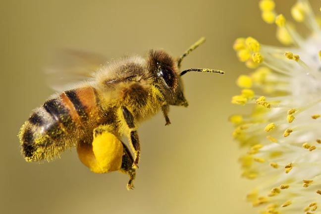

Colectarea nectarului
Albinele lucrătoare zboară în jurul florilor în căutare de nectar, pe care îl colectează cu ajutorul limbii lor extensibile.
După colectare, nectarul este transportat înapoi în stup, unde începe procesul de transformare în miere.
Tipuri de miere și sursele lor:
| Tip de miere | Plante sau pomi de proveniență |
|---|---|
| Florala | Flori de câmp, salcâm, levănțică |
| Salcâm | Salcâm |
| Levănțică | Levănțică |